Physicist · Science Communicator · Researcher
Aspiring physicist studying at the University of Copenhagen with a strong background in scientific research and communication. Represented Denmark at EUCYS 2024 and placed 4th globally at ISEF 2023 in Physics & Astronomy. Speaker at the London International Youth Science Forum, the Stockholm International Youth Science Seminar during Nobel Week, and the Bloom Festival.
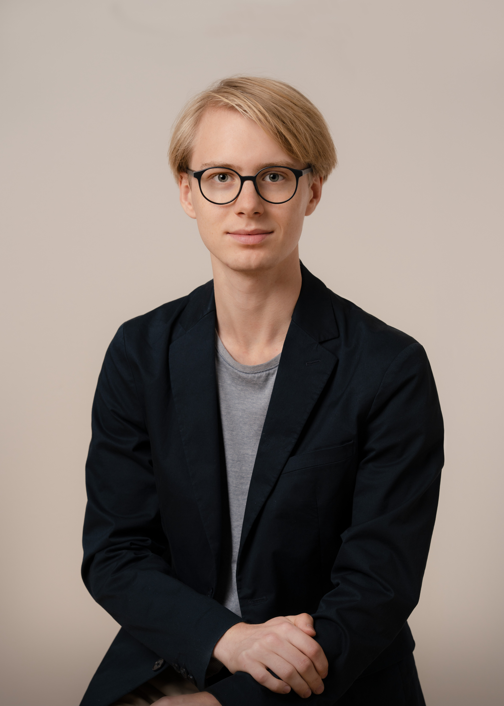
A Journey in Science
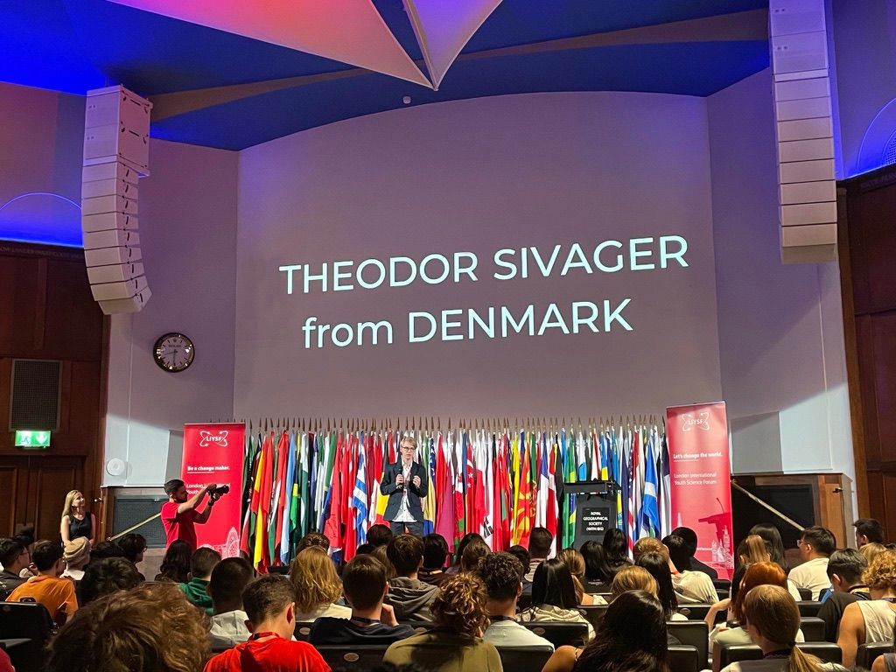
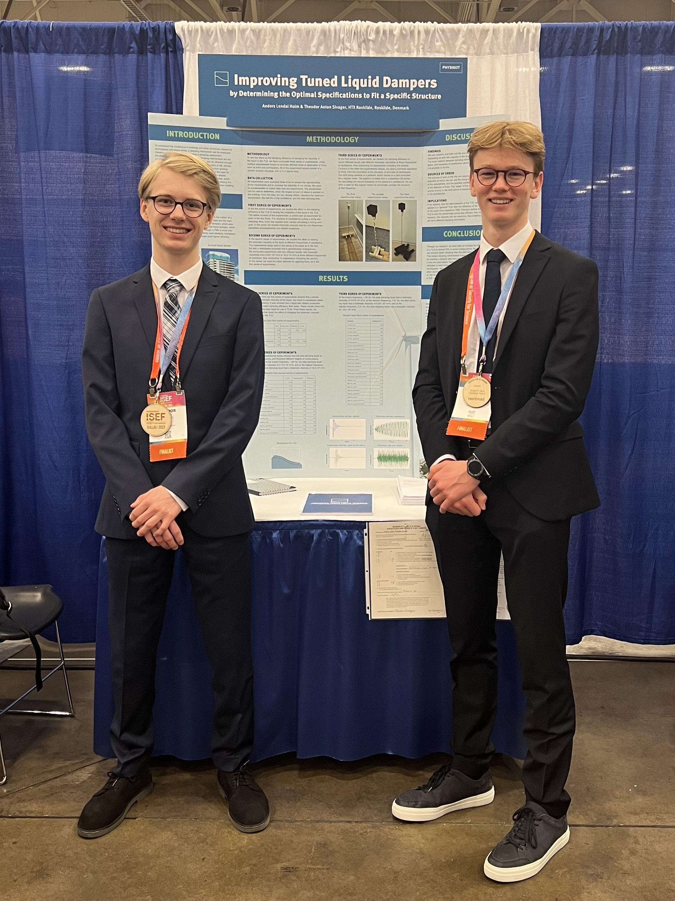
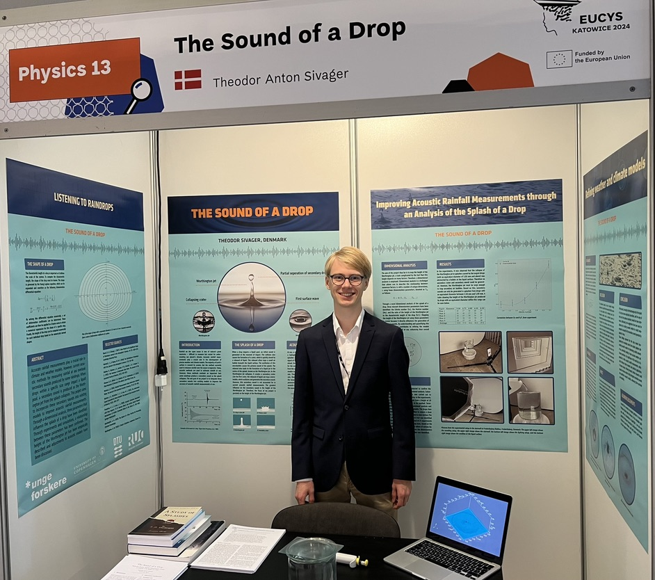
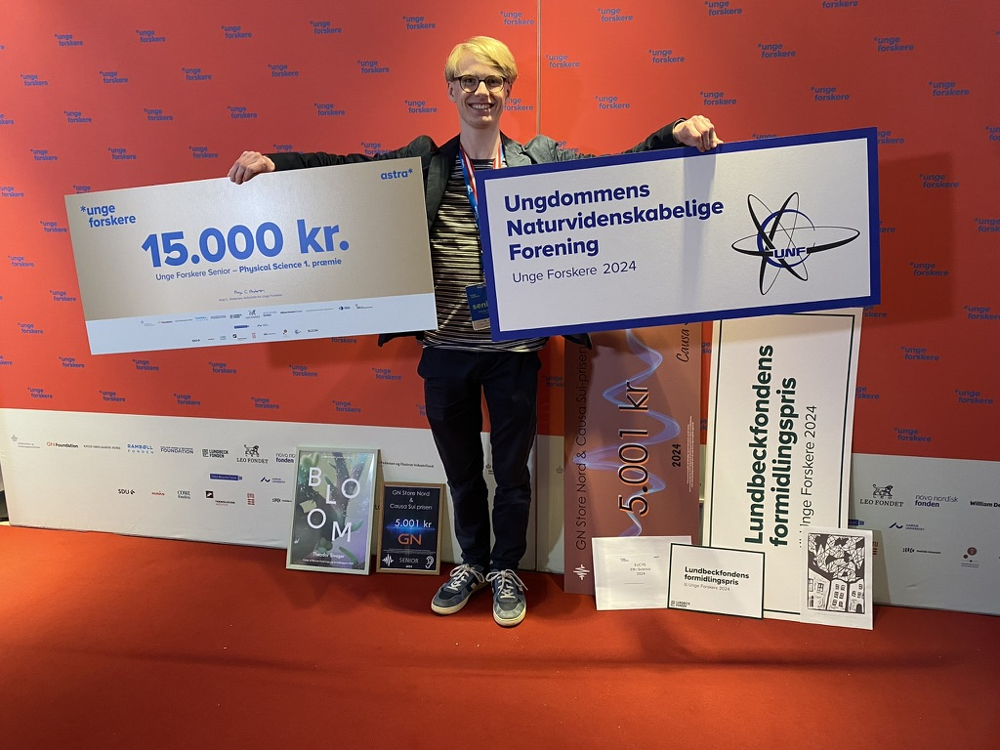
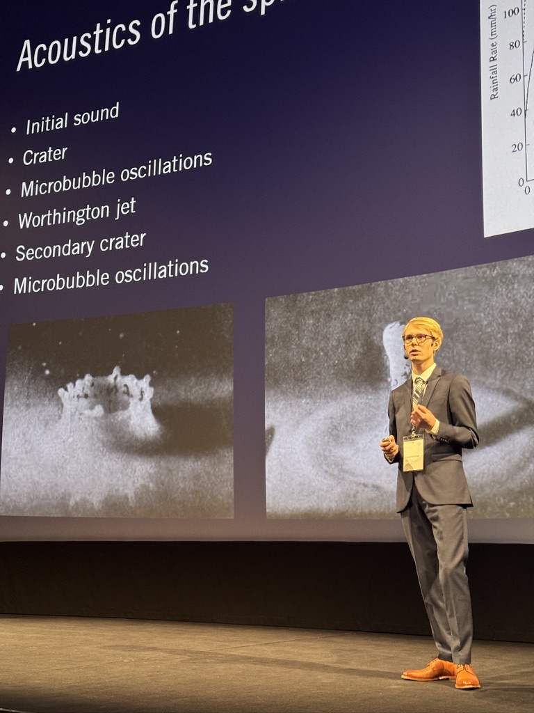
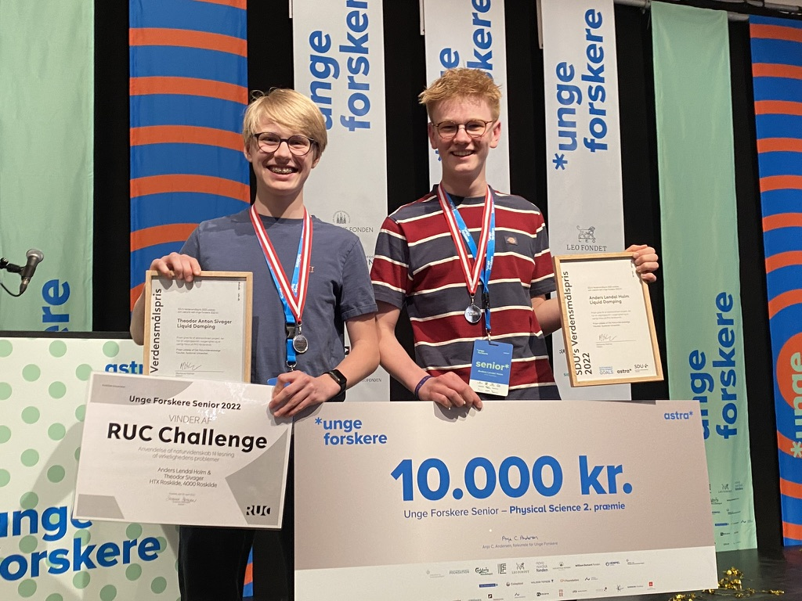
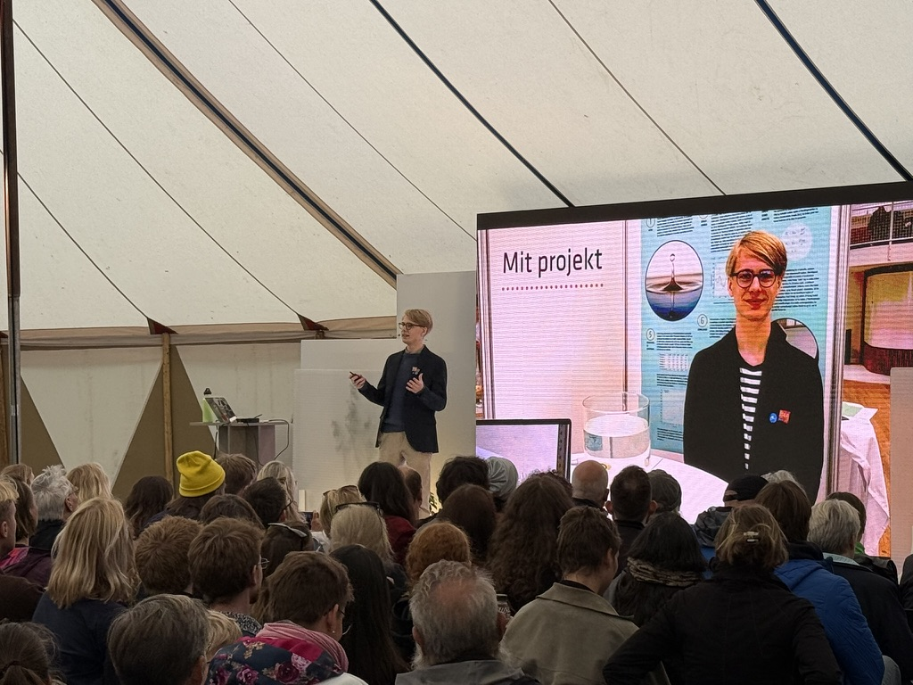
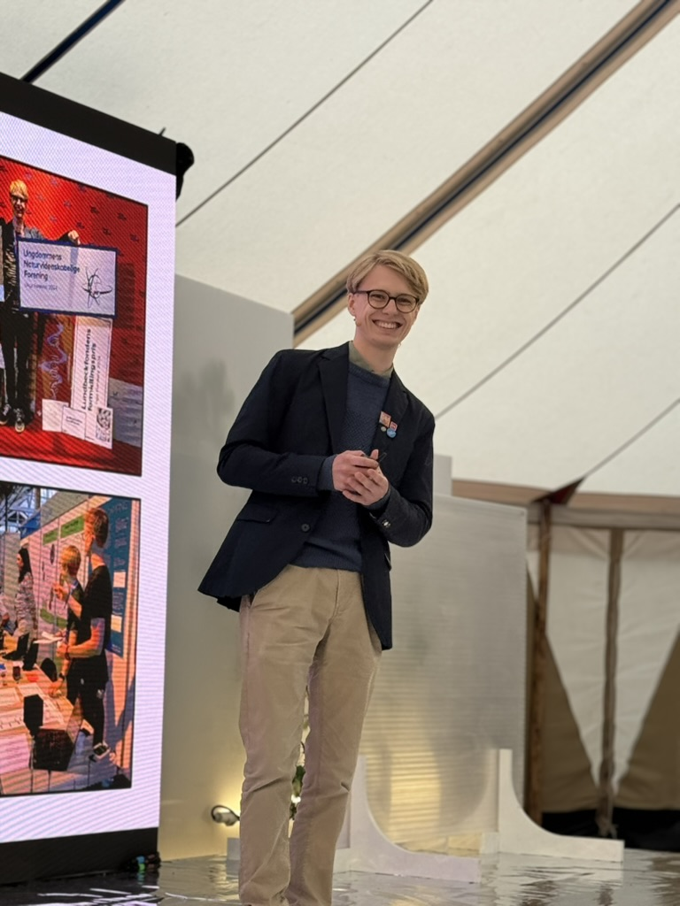
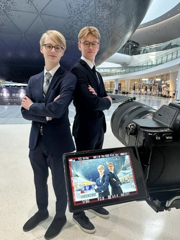
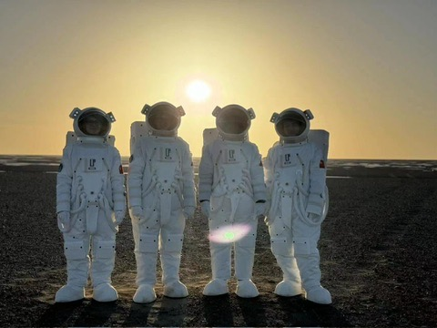
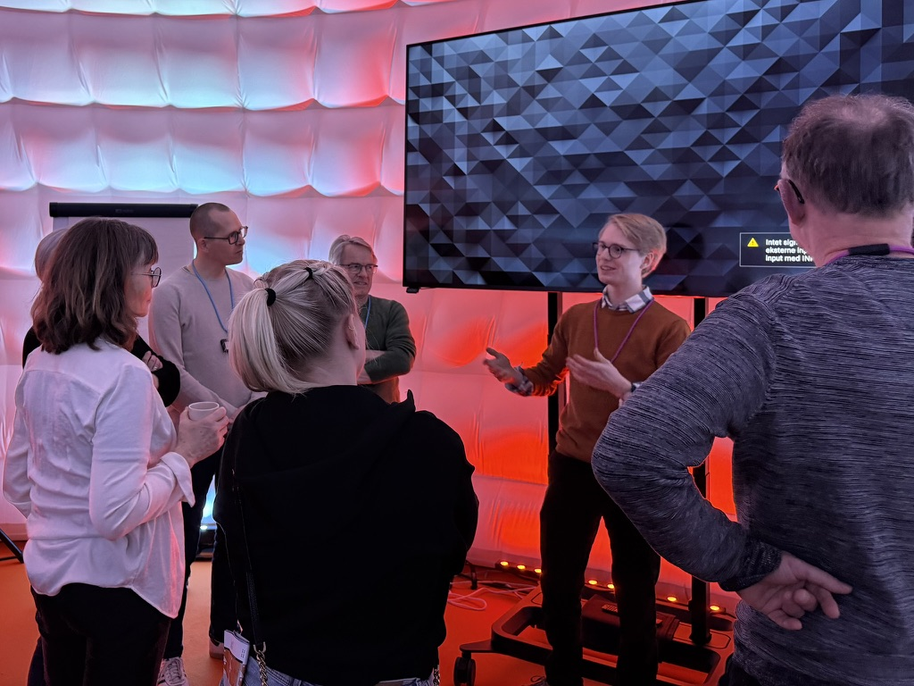
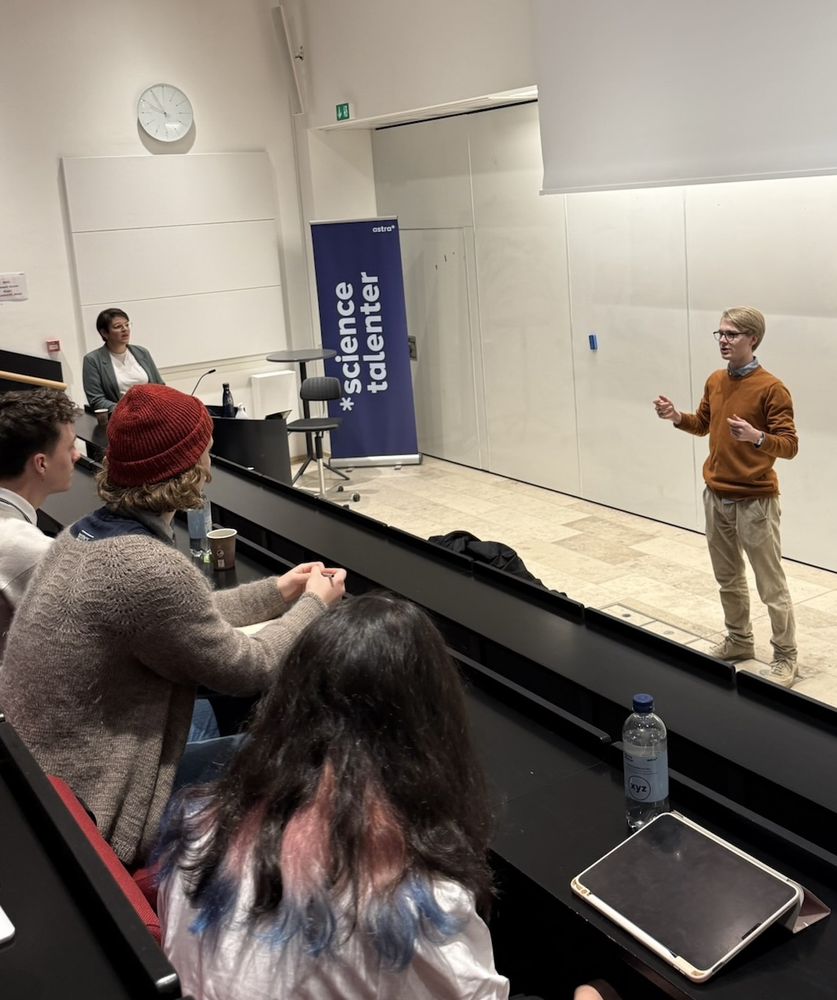
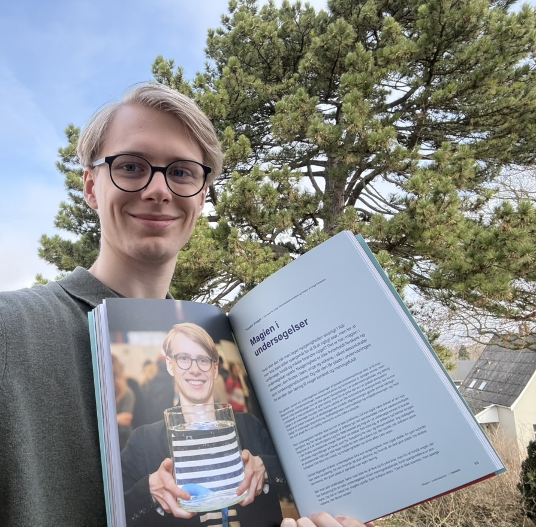
Career
Unge Videnskabsformidlere
Unge Videnskabsformidlere is a national organisation for young science communicators, built on a simple idea: young people communicate science to young people.
As founder and chair, I have been responsible for establishing the organisation from the ground up; assembling the founding board and core team, building the organisational structure, and developing the programme. I have led our fundraising efforts, including the preparation of funding applications, and secured support from the Novo Nordisk Foundation (975,000 DKK).
Unga Forskare
The Stockholm International Youth Science Seminar (SIYSS) is a prestigious week-long event held during Nobel Week, bringing together outstanding young scientists from across the world.
As Head of Communications, I am responsible for the strategic direction of SIYSS's external communication. This includes developing the communication strategy and plan, setting the overall direction for how SIYSS communicates, and leading the communications team.
Unga Forskare
As Seminar Coordinator, I was responsible for coordinating the seminar programme and developing educational and outreach material for upper secondary school audiences. I planned the "Minds of the Future" panel and served as Q&A master for the participant session, working closely with the SIYSS leadership team and international partners.
Science Akademiet
Science Akademiet is a new national talent initiative for upper secondary school students, supported by the Novo Nordisk Foundation and Tuborgfondet (1.3 million DKK).
As Development Lead, I have been part of building the organisation from the ground up, working on the organisational development, outreach to upper secondary schools, and recruitment of instructors and coordinators. I have also contributed to external communication as the initiative has grown.
Københavns Kommunes Ungdomsskole
I teach Science Lab, a project-based science course, rooted in a simple conviction: students learn best when they are working on something that matters to them. On Science Lab, students develop their own projects from idea to finished experiment or prototype, choosing their own questions, methods, and directions.
The teaching follows the full project cycle, from initial idea and research through experimentation, discussion, and presentation. Where students wish to, we work within the framework of the Unge Forskere competition, which provides a natural milestone and an external goal to work towards. I also serve as a teaching assistant for the Physics/Chemistry classes at the school.
Selskabet for Naturlærens Udbredelse (SNU)
Served as exhibition guide at "Fra Forsker til Folk" (From Researcher to Public) at Rundetårn, Copenhagen, presenting content about Danish researchers and the history of science to a broad public audience.
HTX Roskilde
Founded and led a science research club to create a space where students could pursue and develop their scientific projects and ideas alongside like-minded peers.
Recognition
2024
Awarded for excellence in science communication. Prize included participation at the London International Youth Science Forum.
2024
Recognised for outstanding research and communication. Prize included a talk at the 2025 Bloom Festival.
2024
First place in Physical Science with "The Sound of a Drop". Earned qualification to EUCYS 2024 in Katowice.
2024
Best acoustics-related project at Unge Forskere 2024.
2024
The Danish Youth Association of Science's Special Award for Communication. Prize included participation at SIYSS 2024 and the Nobel Ceremony.
2023
Placed 4th globally at the Regeneron International Science and Engineering Fair in Dallas, Texas, with "Improving Tuned Liquid Dampers".
2022
Second place in Physical Science with "Liquid Damping". Earned qualification to ISEF 2023 in Dallas, Texas.
2022
Awarded for applying science to solve real-world problems.
2022
Awarded for an extraordinary project rooted in curiosity with a focus on the UN Sustainable Development Goals.
2021
First place in Physical Science with "Remote Energy".
2021
Awarded for using science and technology to find solutions that contribute to sustainable change in society.
2020
First place in Life Science with "Frekvensfarm".
Science
Contributed a chapter titled "The Magic of Inquiry" to Naturfaglige undersøgelser — didaktik, motivation og hverdagsrealisme, exploring inquiry as a driver of ownership, meaningful learning, and a way of making complex problems tangible. Published by Danmarks Naturfagslærerforening with support from the LEO Foundation.
Improving acoustic methods for rainfall measurement over the ocean through analysis of droplet impact. Presented at LIYSF, EUCYS, and SIYSS during Nobel Week. CFD work supervised by Associate Professor Johan Rønby Pedersen.
Development of a mathematical model ("skewed spherical trochoids") describing surface patterns on Jupiter's moon Europa. Supervised by Associate Professor Aslak Grinsted and Professor Anja Cetti Andersen.
Experimental investigation of how kinematic viscosity impacts TLD efficiency. Presented internationally including at Regeneron ISEF and Junior Edison (China). Increased TLD efficiency beyond more expensive alternatives in specific configurations.
Development of a turbine-based energy supply unit for remote areas without electricity access. Supervised by the CEO of Floating Power Plant and MSc Anders Køhler.
Outreach
| 2026 | Worldcafé on ideas and scientific projects at the Big Bang conference |
| 2026 | Presentation and workshop on brainstorming scientific ideas at Science talenter, Sorø |
| 2025 | Q&A Master at Stockholm International Youth Science Seminar |
| 2025 | Panelist, "Ask Me Anything om Høj Begavelse" at Folkemødet, Bornholm |
| 2025 | Talk at Opfindefestivallen, Danmarks Tekniske Museum, Helsingør |
| 2025 | Guest speaker at Bloom Festival, Frederiksberg |
| 2025 | Presentation on practical science education at the Big Bang conference, Odense |
| 2024 | Presentation at Stockholm Youth Science Seminar during Nobel Prize week |
| 2024 | Selected presenter at London International Youth Science Forum, The Royal Geographical Society |
| 2024 | Presentation on practical science education for the Danish Agency for Education and Quality |
| 2024 | Presentation at the Forskerspirer regional meeting on scientific project development |
| 2024 | Bloom School walk for elementary students on raindrop acoustics, Frederiksberg |
| 2023 | Presentation on project-based science work at Slotshaven Gymnasium, Holbæk |
| 2023 | Presentation at Unge Forskere regional finals on scientific experiences |
| 2023 | Participant, Junior Edison Eureka (Season 8), Chinese national TV programme |
Education
University of Copenhagen
Currently enrolled.
Pulsen Gymnasium (HTX Roskilde) · 2024
Grade average 12.3/12. Physics A, Mathematics A, English A, Chemistry B. Honoured with "The Golden X" for academic excellence and contribution to school culture.
Skt. Josefs Skole, Roskilde · 2021
Grade average 11.6/12. Completed IGCSE Business Studies and IGCSE Enterprise. Selected member of the school's science talent programme.
Various Institutions
"Future STEM Leaders" at IDA Academy. Summer school in Complex Systems at Utrecht University. Mathematical Modelling at UNF. 16 science camps at Science Talents, Sorø.
Say hello
Phone
+45 40 30 94 80
Location
Frederiksberg, Denmark